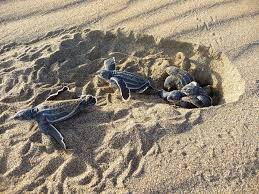
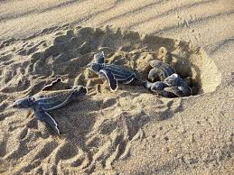

Sea turtle Threats
Sea turtles are one of the most ancient creatures on earth, dating back to more than 100 million years ago. These reptiles are an integral part of the ocean ecosystem and play a vital role in maintaining the balance of marine life. However, sea turtles are facing numerous threats that are pushing them towards extinction. In this article, we will discuss some of the major threats that sea turtles are facing today.
Habitat Loss
Sea turtles are dependent on beaches for nesting, and it is estimated that they have lost around 80% of their nesting habitats due to human activities such as coastal development, beachfront construction, and pollution. These activities have not only destroyed the nesting habitats but also disrupted the natural processes of the beaches, making it difficult for the turtles to lay their eggs.
 

Climate change
Climate change is another significant threat to sea turtles. The rising temperatures of the oceans are causing the sea levels to rise, which is leading to the erosion of beaches. This is making it difficult for the turtles to find suitable nesting sites. Additionally, climate change is causing ocean currents to shift, making it harder for hatchlings to reach their feeding grounds.
Pollution
Pollution is a major threat to sea turtles. Plastic pollution is a significant problem for sea turtles as they mistake plastic bags and other debris for jellyfish, their favorite food. This can cause blockages in their digestive systems, leading to death. Additionally, oil spills and chemical pollution can harm sea turtles by contaminating their food sources or damaging their habitats.
Hunting and Poaching
Sea turtles have been hunted for their meat, shells, and eggs for centuries. In some cultures, sea turtle meat is considered a delicacy, and their shells are used for decorative purposes. Additionally, sea turtle eggs are believed to have medicinal properties. This has led to the poaching of sea turtles and their eggs, which has significantly reduced their populations.
In conclusion, sea turtles are facing numerous threats that are pushing them towards extinction. It is crucial to take action to protect these ancient creatures and ensure that they continue to play their vital role in maintaining the balance of marine life. Governments, conservation organizations, and individuals must work together to reduce the impact of these threats and protect sea turtles for future generations.